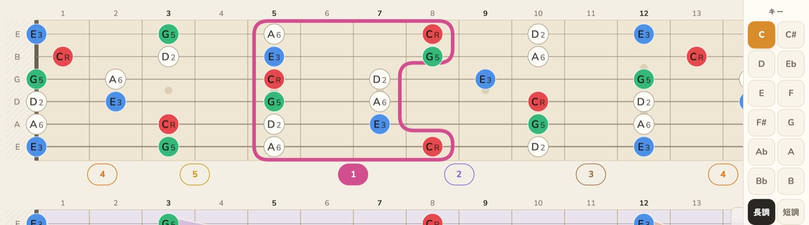
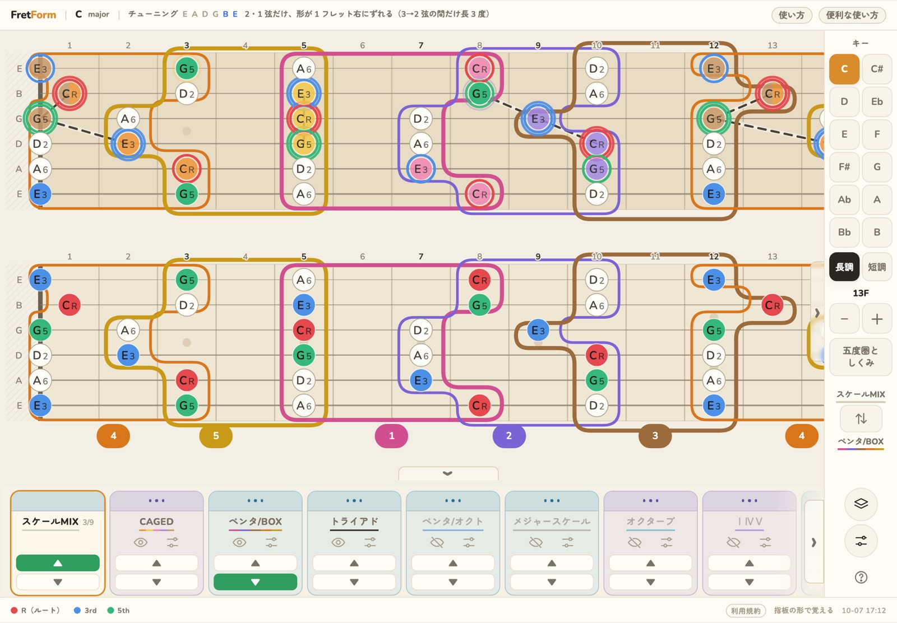
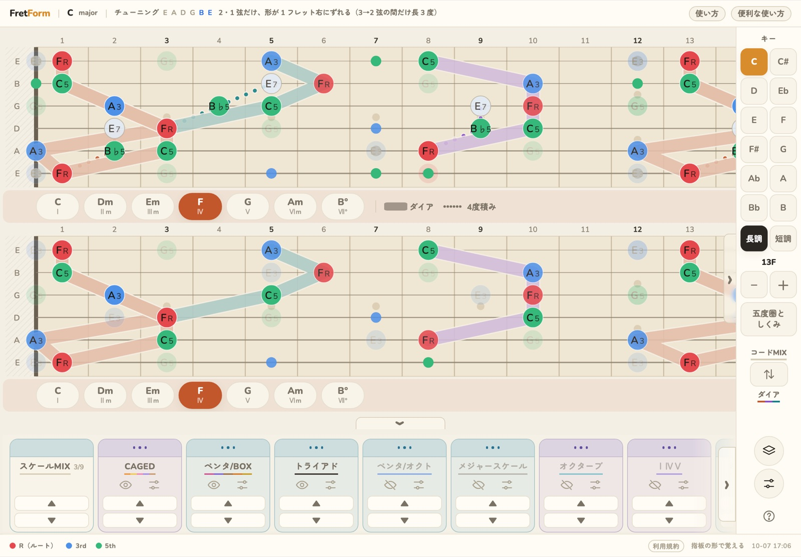
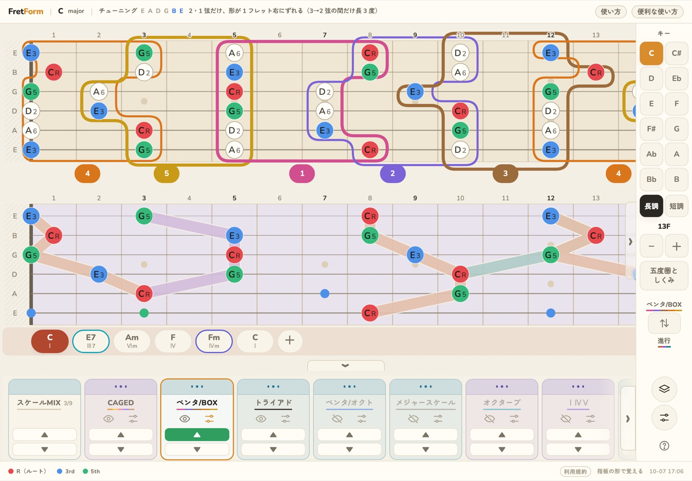
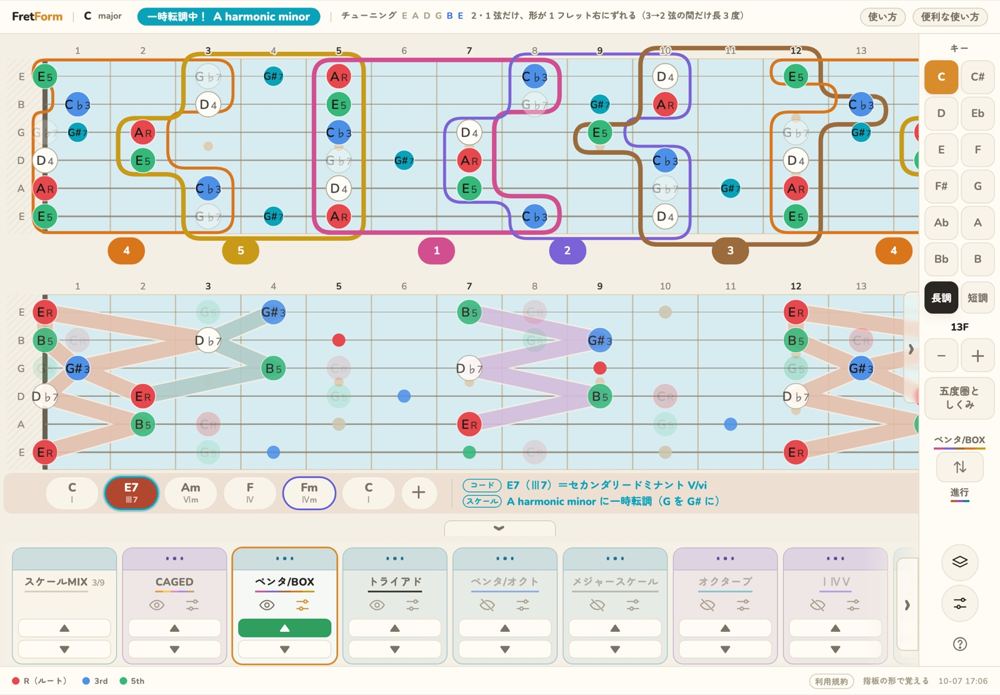
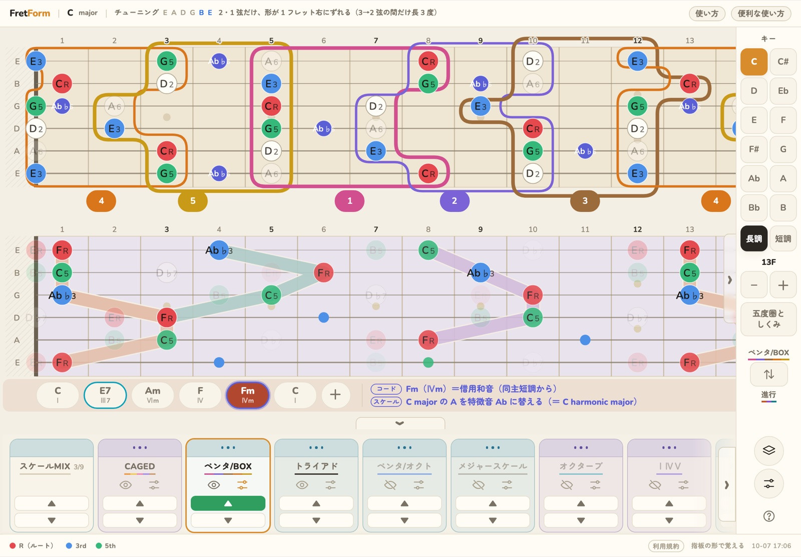
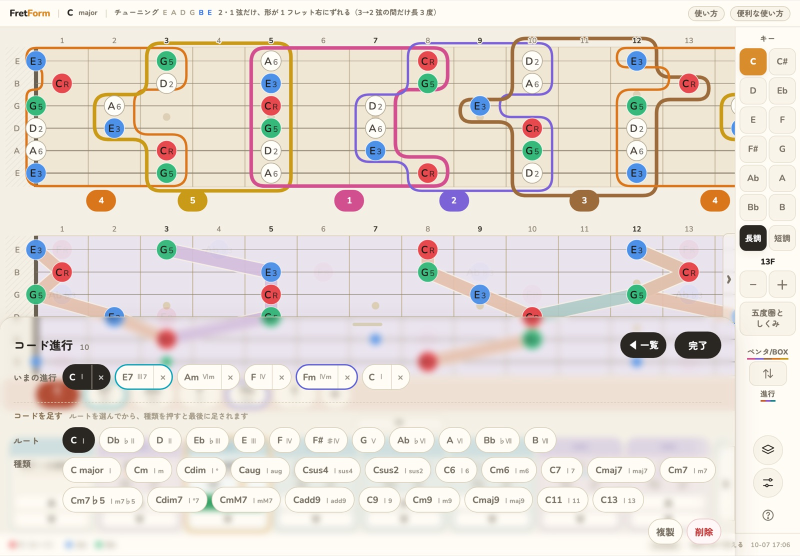
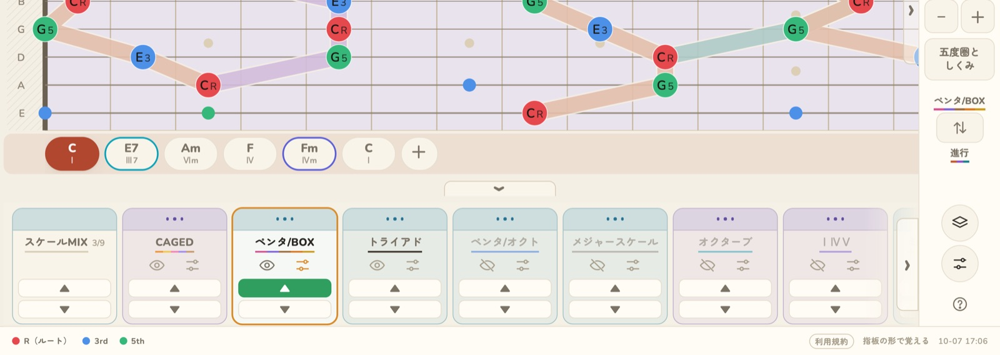
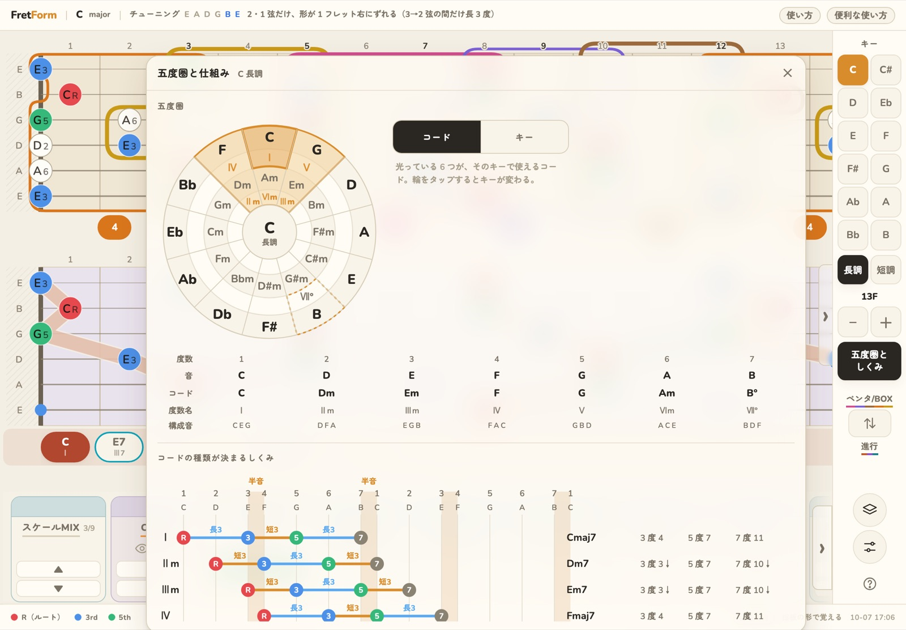

便利な使い方
FretForm は、ギターの指板の上の音を、目で見て覚えるためのアプリです。スケールやコードの「形」を、いろいろな角度から並べたり重ねたりして見ることで、音どうしの関係を感覚でつかめます。
ギターは、同じ押さえ方（形）を横にずらすだけで、別のキーでも同じように弾けます。だから、場所を 1 つずつ暗記するより、形で覚えると、一気に指板の世界が広がります。
このページでは、まず 1 つの形を見るところから始めて、少しずつ組み合わせ方を紹介します。
このページで出てくる言葉
- キー：曲の中心になる音（C、G など）。キーが変わると、使う音のまとまりが変わります。
- スケール：そのキーで使う音の並び。ペンタ（ペンタトニック）は 5 つの音だけの、いちばんよく使うスケール。
- コード：同時に鳴らす音の組み合わせ（C、Am など）。
- R・3rd・5th：コードやスケールの中での音の役割。R（ルート）は中心の音、3rd・5th はそこから 3 番目・5 番目の音。
1まず 1 つの覚え方を見る — ペンタの Box 1
指板の丸は、そのキーで使う音です。丸の色は役割で決まっていて、赤＝R（ルート＝主音）、青＝3rd、緑＝5th。色の無い丸はそれ以外の音です。丸の中の文字は音名と度数（CR、E3…）。
ペンタの枠は、よく使う 5 つの押さえる場所（Box 1〜5）です。ネックの下の番号を押すと、Box を 1 つずつ出し入れできます。最初は 1 つだけ出して覚えるのが早道です。

C キーで Box 1 だけを出したところ。赤い R（C）の位置が手がかり。
- 右のメニューでキーを変えると、指板はそのままで、形が横に滑って新しいキーの場所へ移ります。形はそのまま、場所だけが変わる——これがこの画面のいちばん大事な見え方です。
- 拡大（右のメニューの − ＋）で、見えるフレットの数を変えられます。
22 段で見比べる — CAGED とペンタ
指板は上下 2 段。下の列のカードの ▲ で上の段、▼ で下の段に出します。2 段はフレットの位置がそろっているので、同じ場所に何があるかを縦に見比べられます。
たとえば上に CAGED、下にペンタ/BOX。ペンタの 5 つの Box は、それぞれ CAGED のどれか 1 つのフォームに乗っています（どのキーでも同じ）。そこで同じ場所は同じ色にしています：C＝Box 4、A＝Box 5、G＝Box 1、E＝Box 2、D＝Box 3。
同じ色が縦にそろいます。CAGED の色は、R・3rd・5th の赤・青・緑と取り違えない色にしてあります。
3重ねて 1 枚で見る — スケールMIX
見比べに慣れたら、重ねます。カードの目を開けた覚え方は、スケールMIX に重なります（最初は CAGED・ペンタ/BOX・トライアド）。
- カードの並びが重なりの順です（左ほど手前）。⋮ を掴んで横に動かすと入れ替わります。
- 同じ位置に 2 つ以上の音が来たときは、手前の段が丸を塗り、奥の段は外側の輪になります。輪の色で「この音はペンタの R でもある」が分かります。

上段にスケールMIX、下段にペンタ/BOX。重ねた地図と、その中の 1 つを並べて見られます。
4コードを見る — ダイアトニックとコードMIX
ダイア（ダイアトニックコード）のカードを出すと、ネックの下にそのキーの 7 つのコード（C・Dm・Em…）が並びます。ボタンの下の小さい文字（Ⅰ・Ⅱm…）は、キーの中での度数（スケール・ディグリー）。押したコードの押さえ方が、音を順につないだ帯で出ます。帯の色はルートを置く弦（6・5・4 弦）ごとに変わります。
ドロップ2・4 度積み・パワー・シェルも同じ作りで、これらはコードMIXに重なります。コードを選ぶボタンは全部の段で同期するので、重ねると必ず同じコードどうし。線の種類で見分けます：太い帯＝ダイア、二重線＝ドロップ2、細い線＝シェル、細い破線＝パワー、点線＝4 度積み。

F（Ⅳ）を選んだところ。上段がコードMIX（ダイア＋4 度積み）、下段がダイアだけ。
5スケールと進行を並べる
ここまでの組み合わせです。上の段にペンタ、下の段にコード進行（最初に開いたときの並び）。進行は C – E7 – Am – F – Fm – C。ネックの下のコードを押すと、下の段にそのコードの押さえ方と、ほかの場所の同じ音（小さい丸）が出ます。
2 段はフレットがそろっているので、いま押さえているコードのすぐ上で、どのスケールの音が弾けるかがそのまま見えます。コードを押すたびに、前後で共通の音はそのまま、消える音はゆっくり薄く、新しい音はゆっくり濃くなります。

弾きながらコードを 1 つずつ押していく使い方。
6キーの外のコード — セカンダリードミナントと借用和音
進行にキーの外のコードがあると、ボタンの縁に色が付きます。青緑＝セカンダリードミナント、藍＝借用和音、灰青＝どちらでもないキー外のコード。押すと、上の段のスケールもそのコードに合わせて変わります。
E7（Ⅲ7）：次の Am へ解決するドミナント（V/vi）。鳴らしている間は A を主音に一時転調している、とみて、ヘッダーに「一時転調中！ A harmonic minor」、ネック全体が青緑になります。上の段は A を R として読み替え、G を薄く、G# を青緑の丸で足します。

ネックの下の説明は 2 行。上がコードの役割、下がスケール側で変わること。
Fm（Ⅳm）：同主短調（C マイナー）から借りてきたコード。キーは C のまま、A を薄く、特徴音 A♭ を藍の丸で足します（C major の A を A♭ に替える＝ C harmonic major）。

Ⅳ → Ⅳm → Ⅰ は、ポップスでよく出る借用和音の使い方。
どうやって見分けているか
- ドミナントの形（長 3 度＋短 7 度など）で、次のコードが 5 度下に解決していればセカンダリードミナント。
- 同じ主音の別の旋法（長調なら同主短調など）の音だけでできていれば借用和音。
- 解決しないドミナントもセカンダリードミナントとして扱います。裏コードのように型どおりでないものは「キー外」とだけ示します。
7進行を自分の曲に作り替える
ネックの下の＋を押すと、進行の編集が開きます。
- いまの進行：押すとそのコードを出します。× で消せます。
- コードを足す：ルート（12 個、度数つき）を選んでから、種類（メジャー・マイナー・7th・sus・9th・13th など 20 種類）を押すと、進行の最後に足されます。

点線より上が「消す」、下が「足す」。続けて何個でも足せます。閉じるのは「完了」。
押さえ方は、ルートを 6・5・4 弦に置いたバレーの形と、ナット近くの開放コード（C なら x32010、C7 なら x32310 など）。
8画面のまわり — カード・右のメニュー・五度圏・保存
- カードの色は種類（音階・コード・目印・進行）、名前の下の線はネック上で使う色の見本です。
- 右のメニューには、キー・長調／短調・拡大・五度圏としくみ、その下にいまの上段と下段の名前と、入れ替えボタン（⇅）。
- 下の列は 2 段階でしまえます。1 回目で ▲▼ が隠れ、2 回目で全部隠れます（出すときは 1 回）。横に続きがあるときは、端がぼけて ‹ › のボタンが出ます。

カードの列（下）と右のメニュー。
五度圏としくみ（右のメニュー）：五度圏は外から長調のキー／度数／平行短調／度数、真ん中にいまのキー。光っている 6 つが、そのキーのダイアトニック・コードです。下の「コードの種類が決まるしくみ」は、なぜ Ⅰ は maj7、Ⅴ は 7th、Ⅶ は m7♭5 になるのかを 1 枚で見せる図です。

窓は掴んで動かせます。輪をタップするとキーが変わります。
- 赤・青・緑は R・3rd・5th だけの色。キーの外は寒色（青緑＝一時転調、藍＝借用和音の特徴音）。
- 右下の「表示設定」で丸の文字（音名／度数／両方）を選べます。いまの設定を保存しておけばあとで呼び出せ、初期状態に戻すで最初の並びに戻ります。保存先はこの端末のブラウザの中だけです。
- 迷ったら、ヘッダーの「使い方」で画面の案内（ツアー）をいつでも呼び出せます。